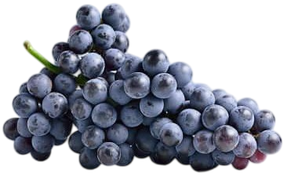
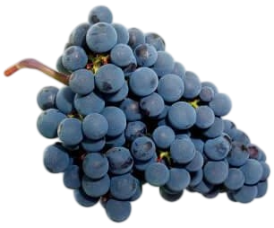
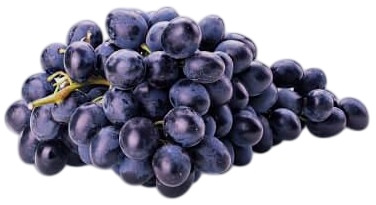
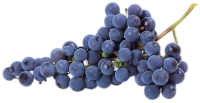
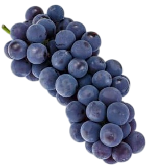

Tipos de uva
PARA VINOS TINTOS MÁS IMPORTANTES
Variedades de uvas hay decenas, pero cuando hablamos de producir vino tinto, estas son las reinas.

Cabernet Sauvignon
- Es la uva más famosa en el mundo para fabricar vino tinto.
- Es originaria de la región francesa de Burdeos, Francia.
- Es una uva que envejece muy bien en barrica.

Merlot
- Puede ser cultivada en diversas partes del mundo.
- Tiene una maduración rápida por lo que se usa en vinos jóvenes.
- Los vinos con uva merlot son generalmente más ligeros en boca comparados con la cabernet.

Tempranillo
- Es la uva más popular y usada en España.
- Se llama así porque es recogida en poco tiempo.
- Puede usarse para hacer vinos jóvenes, de crianza y reserva.

Pinot Noir
- Es originaria de la región de Borgoña, Francia.
- Es una uva difícil de cultivar y tratar por su sensibilidad.
- Es responsable de algunos de los mejores caldos del mundo.

Syrah
- Se cree que proviene de la antigua Persia, hoy Irán.
- Es capaz de adaptarse a los climas del Mediterráneo.
- Sus vinos cuentan con aromas a frutas maduras.